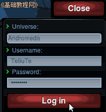
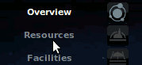
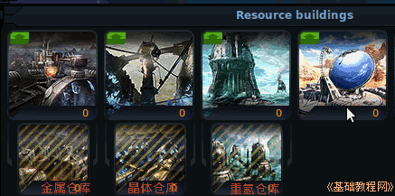
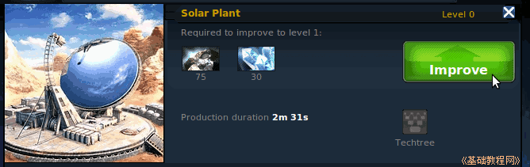
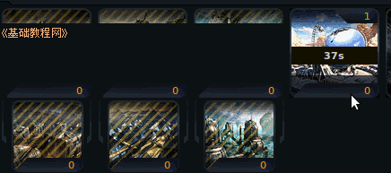
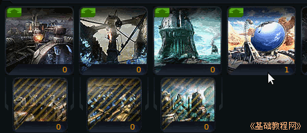
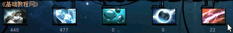
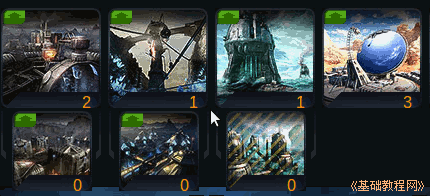

Ogame 银河帝国游戏新手入门
作者：TeliuTe 来源：基础教程网
建造各种飞船和厂房都需要资源和能量；
1）进入 http://ogame.org，点右上角红色的“Login”登录；
2）在出来的登录框中，依次选择自己的星球，输入用户名、密码后点“Login”登录；

3）在左侧的列表中，点击第二个“Resources”资源链接；

4）在右侧出来各种矿产资源图标，有金属、晶体和重氢、太阳能发电厂等，下边一排是对应的仓库，
绿色是可以建造，有阴影的是资源不足，黑色是等级不够；

5）先造能源，在第四个圆球太阳能电厂图标上点一下，上面显示建造面板，包括建造时间、耗费资源等，点绿色的“Improve"建造；

6）然后太阳能电厂图标上显示建造剩余时间，其他图标处于冻结状态；

7）建造完成后，能源图标显示为1级，上边的能量图标中也显示当前能源总数；


8）同样再建造金属矿和晶体矿，能量不足了再接着建造太阳能电厂，开始金属矿用的多，要比晶体矿级别高2级，然后建造第三个重氢；

9）尽快把金属和晶体升到10级左右，同时根据产量升级对应的仓库，然后接着发展造船厂和科技；
本节学习了建造资源的基本操作，如果你成功地完成了练习，请继续学习下一课内容；
本教程由86团学校TeliuTe制作|著作权所有
基础教程网：http://teliute.org/
美丽的校园……
转载和引用本站内容，请保留版权信息和本站链接。